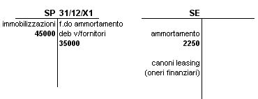
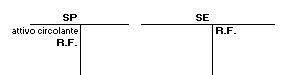
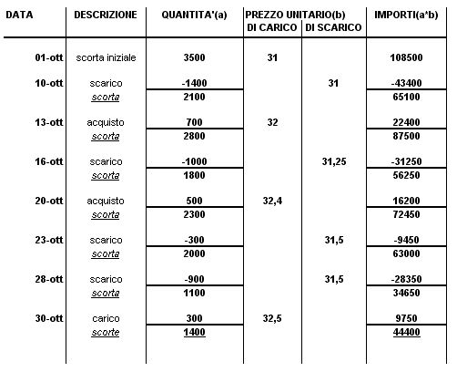
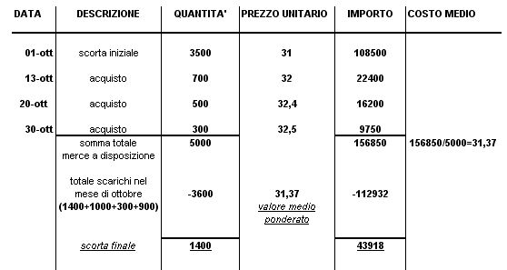

Torna alla pagina di Economia ed Organizzazione Aziendale
:: Economia ed Organizzazione Aziendale ::
Lezione 21/05/2008
Ex1
Questo esercizio è la continuazione dell'esercizio della lezione scorsa però seguendo i Principi Contabili Internazionali.

Ammortamento: Aliquota Annuale 20% * 3 Mesi di Utilizzo(rispetto all'anno i 3 mesi sono 1/4) = 20% * 1/4
Valore del Bene: 45000
Aliquota: 1/4Nota1 * 20% = 5%(Aliquota riferita ai 3 mesi)
Nota1: Prendo 1/4 perché il contratto è stato stipulato il 1/10/X1
Ammortamento: 45000 * 0.05 = 2250
Altro Metodo di risoluzione: (45000 * 20)/100 * (3/12) = (45000 * 20 * 3) / 1200 = 2250
Canoni Leasing
- costo del bene
- spesa per il servizio del credito(oneri finanziari)
Valutazione Scorte di Magazzino

Art.2426 Cod.Civ.
i BENI IN RIMANENZA si possono valutare in base:
- costo d'acquisto
- costo di produzione
- valore di mercato
Secondo i principi contabili(per prudenza) e secondo le norme civilistiche dei due criteri(costo;prezzo di mercato) si deve scegliere IL MINORE. Si fa così perché altrimenti avrei:
- Problemi di ANNACQUAMENTO DI CAPITALE DI FUNZIONAMENTO
- AUMENTO FITTIZIO DELL'UTILE e conseguente rischio di distribuire dividendi non effettivamente realizzati
- AUMENTO DEL REDDITO IMPONIBILE quindi maggiori imposte
Si possono applicare diversi metodi di valutazione delle scorte:
- VALORE EFFETTIVO: comporterebbe la attribuzione a ciascun bene del prezzo pagato o del costo di produzione sostenuto
- COSTO MEDIO PONDERATO: Attach:lezEOA17vs2.jpg Δ
- FIFO
- LIFO
La PONDERAZIONE si calcola con riferimento a:
- i movimenti di merce
- periodo temporale
Ex2 - Metodo1
La ditta Rossi SPA il 1°Ottobre ha in magazzino 3500 unità valorizzate a 31.
- il 10/10 scarico in reparto produttivo 1400 unità
- il 13/10 acquisto 700 unità a costo 32 per unità
- il 16/10 scarico di 1000 unità
- il 20/10 acquisto 500 unità al costo 32,40 per unità
- il 23/10 scarico 300 unità
- il 28/10 scarico 900 unità
- il 30/10 carico di 300 unità. Costo Complessivo: 9750
RICHIESTA:
determinare il valore della merce in magazzino con un costo medio ponderato.
SOLUZIONE:
Con questo metodo seguo le movimentazioni una per una:
MEDIE PER MOVIMENTO

NOTA: VALORE DI SCARICO = valore scorta esistente in magazzino / quantità(n° scorte).
quindi:
- 16/10: valore scarico = 87500 / 2800 = 31.25
- 23/10: valore scarico = 72450 / 2300 = 31.50
- 28/10: valore scarico = 63000 / 2000 = 31.50
La scorta alla fine di Ottobre è 1400 unità per un valore di 44400.
Il costo medio ponderato posso trovarlo anche con le sommatorie:
((3500 * 31) - (1400 * 31)) / (3500-1400) = 31
Ex2 - Metodo2
Il 2° approccio nel calcolo del costo medio ponderato non segue le movimentazioni una per una, ma prende in considerazione tutto il periodo.
MEDIA DI PERIODO

La media ponderata DI PERIODO si ottiene sommando:
- la scorta iniziale
- tutti gli acquisti del periodo
e togliendo a questo:
- il valore di tutti gli scarti(si ottiene moltiplicando le quantità uscite prelevate dal magazzino, per il valore medio unitario degli acquisti più la scorta iniziale)
La media ponderata per movimento assegna alle scorte di magazzino un valore superiore a quello ottenuto con la media ponderata di periodo nell'esercizio fatto.
Torna alla pagina di Economia ed Organizzazione Aziendale
{kind=link}